01. PROHIBICIÓN DE TRAPITOS
02. TRANSPORTE COMO SERVICIO PÚBLICO ESENCIAL
03. EDUCACIÓN COMO SERVICIO PÚBLICO ESENCIAL
04. PROVISIÓN DE COMBUSTIBLE COMO SERVICIO PÚBLICO ESENCIAL
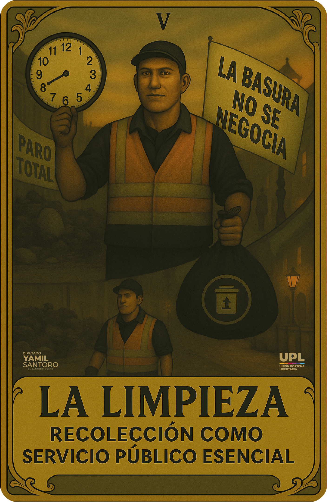
05. RECOLECCIÓN DE RESIDULS COMO SERVICIO PÚBLICO ESENCIAL
06. CREAR LA CALLE "VÍA BIBAS" EN VÍA VIVA
07. EXENCIÓN DE INGRESOS BRUTOS PARA TODOS LOS GRADUADOS UNIVERSITARIOS Y DE TERCIARIOS
08. FIRMAS DIGITALES PARA INICIATIVAS POPULARES
09. ATENCIÓN MÉDICA PRIORITARIA PARA PORTEÑOS EN HOSPITALES PÚBLICOS
10.RECOBRO A LAS PROVINCIAS DE ORIGEN POR LA ATENCIÓN HOSPITALARIA A ARGENTINOS NO RESIDENTES EN CABA
11.COBRO DE LA ATENCIÓN MÉDICA EN HOSPITALES PÚBLICOS A EXTRANJEROS NO RESIDENTES
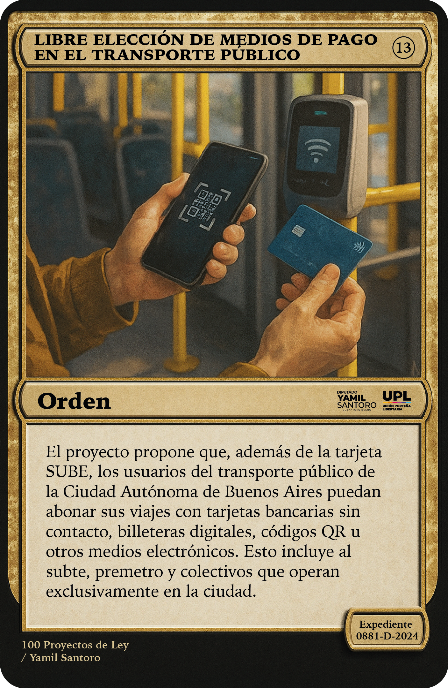
13. LIBRE ELECCIÓN DE MEDIOS DE PAGO EN EL TRANSPORTE PÚBLICO
14. ORDENAMIENTO DEL FESTEJO DE LOS CARNAVALES EN LA CIUDAD: BASTA DE CORTES Y SUBSIDIOS.
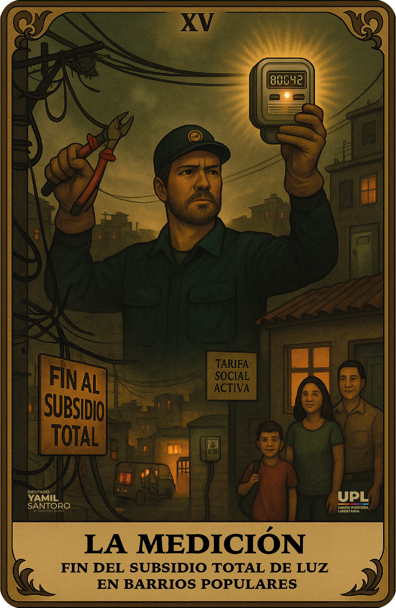
15. FIN DEL SUBSIDIO TOTAL A LA ENERGÍA ELÉCTRICA EN VILLAS Y BARRIOS POPULARES
16. CREACIÓN DEL PROGRAMA DE INSPECCIÓN POLIVALENTE
17. TERMINAR CON LA EXIGENCIA DE CAMPANAS EXTRACTORAS CARÍSIMAS DONDE NO SON NECESARIAS
18. CORTAR EL MILLONARIO E INEFICIENTE SUBSIDIO A LOS "MEDIOS VECINALES"
19. MAYOR SEGURIDAD EN EL SERVICIO DE SUBTERRÁNEOS: SENSORES EN PUERTAS QUE BLOQUEEN EL ARRANQUE INSEGURO
20. DEVOLUCIÓN DE ABL Y PATENTES POR EL AHORRO DEL COSTO DE LAS PASO
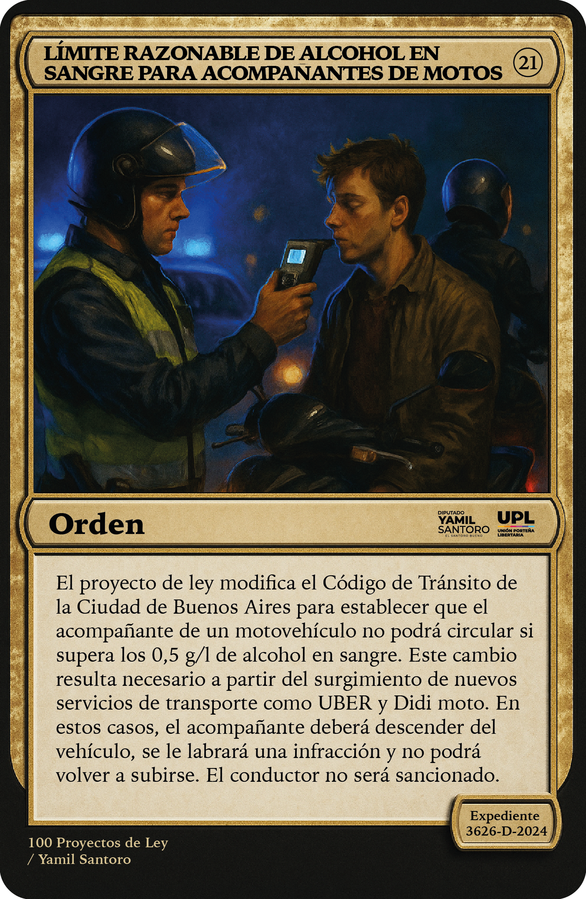
21. ESTABLECER UN LÍMITE RAZONABLE DE ALCOHOL EN SANGRE PARA ACOMPAÑANTES DE MOTOS
22. PERMITIR LA LIBRE CIRCULACIÓN DE VEHÍCULOS EN EL CENTRO PORTEÑO
23. MODIFÍCASE LA DENOMINACIÓN DE LA ACTUAL CALLE “REPÚBLICA BOLIVARIANA DE VENEZUELA” POR LA DE “REPÚBLICA DE VENEZUELA”
24. PROCESO EJECUTIVO DE DESALOJO POR FALTA DE PAGO (DESALOJO EXPRESS I)
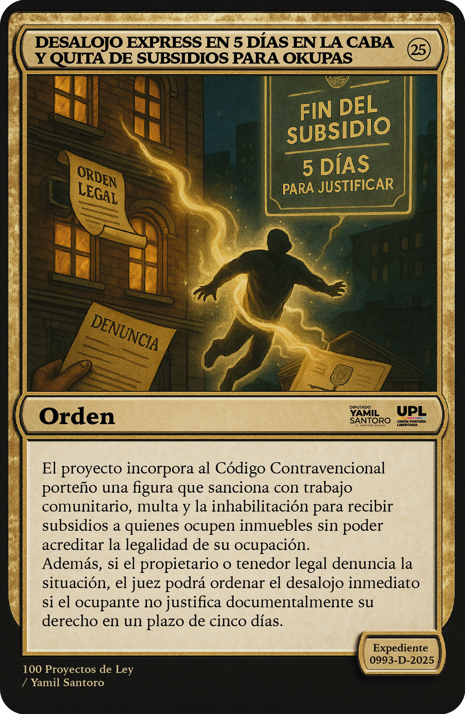
25. DESALOJO EXPRESS EN 5 DÍAS EN LA CABA Y QUITA DE SUBSIDIOS PARA OKUPAS
(DESALOJO EXPRESS II)
26. BENEFICIOS FISCALES POR CONTRATAR TRABAJADORES CON DISCAPACIDAD.
27. BENEFICIOS FISCALES POR CONTRATAR VETERANOS DE LA GUERRA DE LAS ISLAS MALVINAS
28. BENEFICIOS FISCALES POR CONTRATAR A PERSONAS MAYORES
29. ELIMINACIÓN DEL NOMBRE DE RODOLFO WALSH EN ESPACIOS PÚBLICOS DE LA CIUDAD
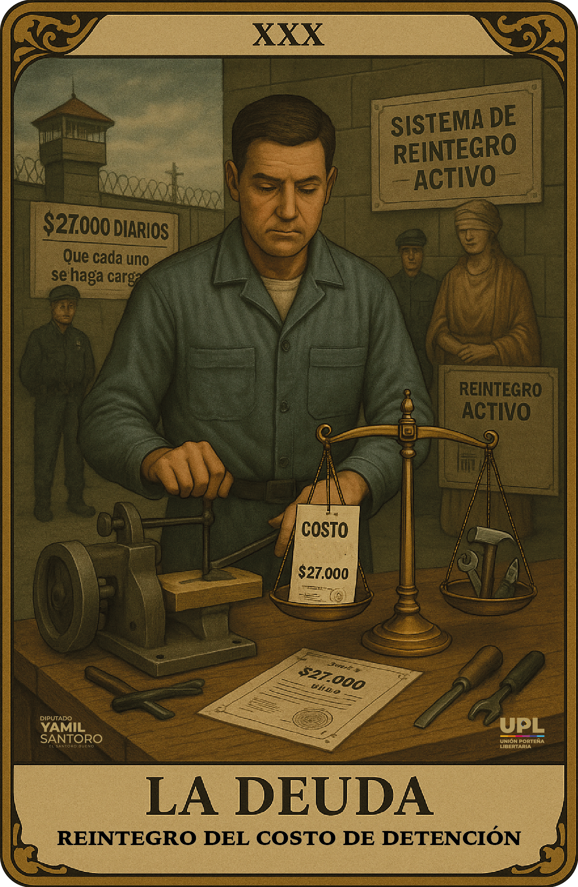
30. QUE LOS PRESOS SE HAGAN CARGO DEL COSTO DE SU DETENCIÓN
31.REDUCCIÓN DEL NÚMERO DE DEFENSORES DEL PUEBLO ADJUNTOS
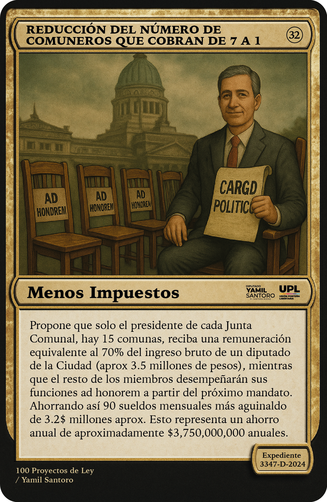
32.REDUCCIÓN DEL NÚMERO DE COMUNEROS QUE COBRAN DE 7 A 1
33.REGLAMENTAR LA LEY DE MECENAZGO CIENTÍFICO
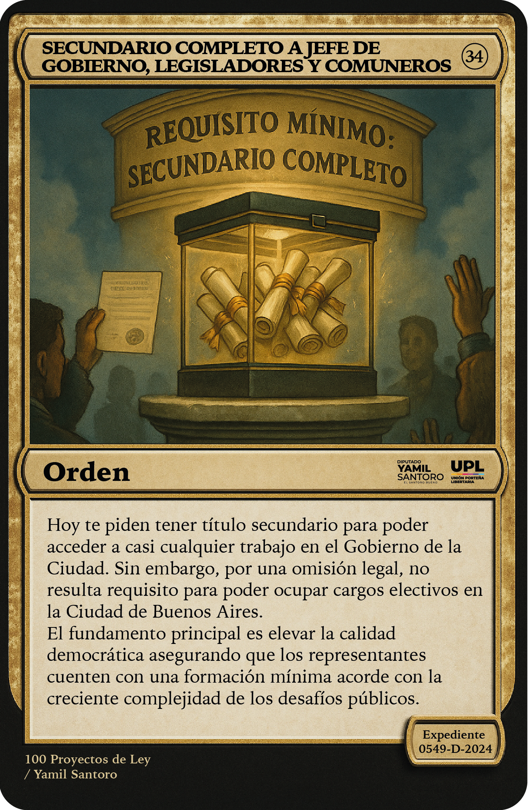
34.EXIGIR QUE EL JEFE DE GOBIERNO, LOS LEGISLADORES Y LOS COMUNEROS TENGAN SECUNDARIO COMPLETO (Ley Zaracho)
35.LIBRE INGRESO DE ANIMALES DOMÉSTICOS DE COMPAÑÍA EN COMERCIOS
36. POSIBILITAR INGRESO DE ANIMALES DOMÉSTICOS DE COMPAÑÍA EN DEPENDENCIAS DEL GOBIERNO DE LA CIUDAD
37. POSIBILITAR EL TRASLADO DE MASCOTAS EN TRANSPORTE PÚBLICO
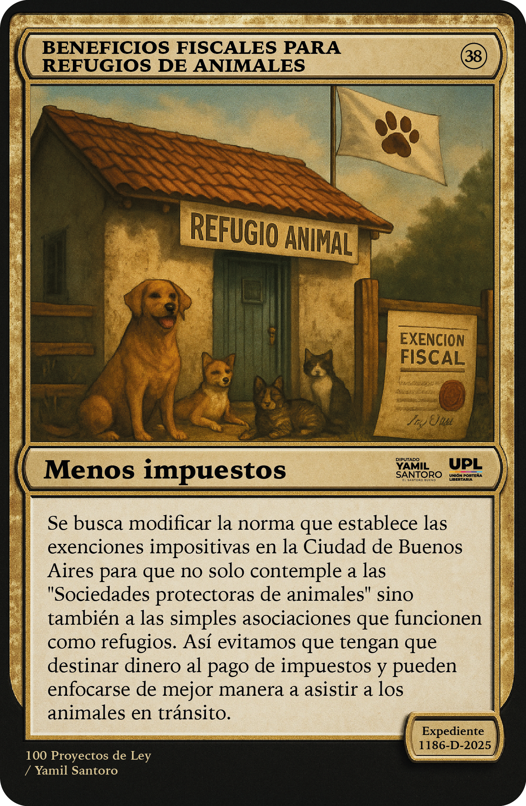
38. BENEFICIOS FISCALES PARA REFUGIOS DE ANIMALES
39. SANCIONES PARA QUIENES NO LEVANTEN LA CACA DE SUS MASCOTAS
40. LEY ANTI-TOMA DE COLEGIOS
41. ESPACIO RESERVADO PARA DETENCIÓN DE VEHÍCULOS FRENTE A ESTABLECIMIENTOS VETERINARIOS
42. CREACIÓN DE DÁRSENAS PARA URGENCIAS VETERINARIAS
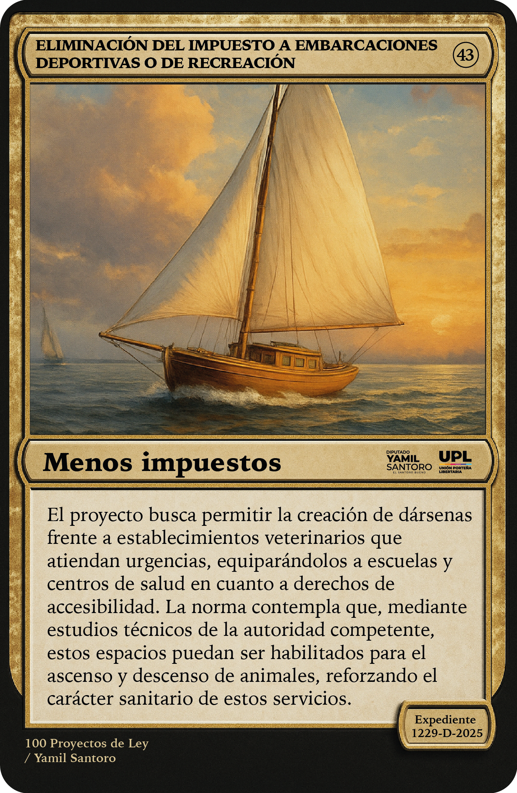
43. ELIMINACIÓN DEL IMPUESTO A EMBARCACIONES DEPORTIVAS O DE RECREACIÓN
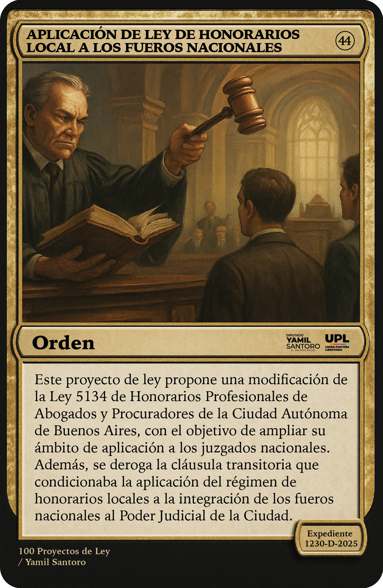
44. APLICACIÓN DE LEY DE HONORARIOS LOCAL A LOS FUEROS NACIONALES
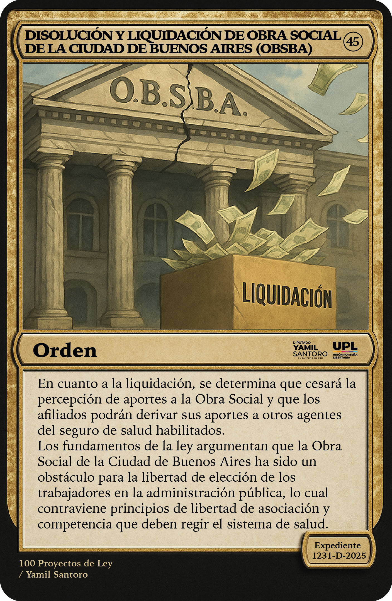
45. DISOLUCIÓN Y LIQUIDACIÓN DE OBRA SOCIAL DE LA CIUDAD DE BUENOS AIRES (OBSBA)
46. LIBRE ELECCIÓN DE OBRA SOCIAL PARA TRABAJADORES MUNICIPALES DE LA CIUDAD DE BUENOS AIRES
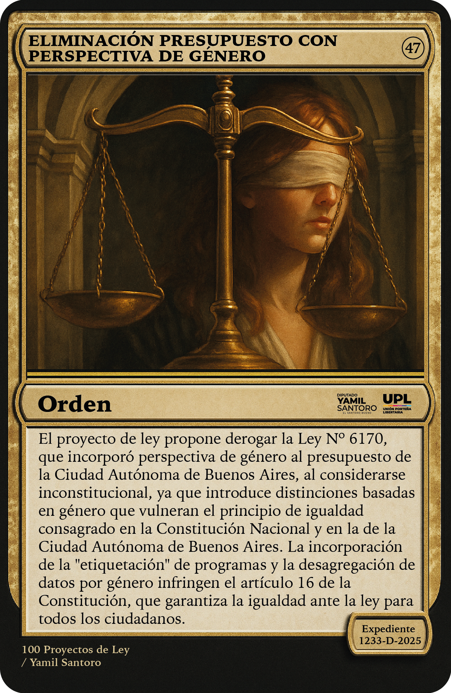
47. ELIMINACIÓN PRESUPUESTO CON PERSPECTIVA DE GÉNERO
48. PROHIBICIÓN DE VENTA AMBULATORIA EN RESTAURANTES Y BARES
49. PRESUNCIÓN PROCESAL DE LEGÍTIMA DEFENSA
50. RACIONALIZACIÓN DEL USO DE VEHÍCULOS OFICIALES
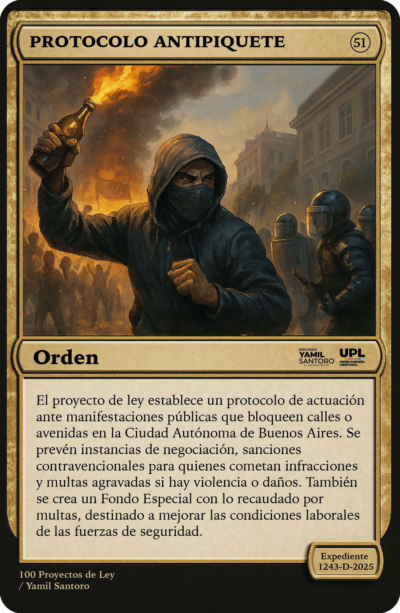
51. PROTOCOLO ANTIPIQUETE
52. OBLIGACIÓN DE LIBERAR CARRILES DE CIRCULACIÓN DURANTE MANIFESTACIONES
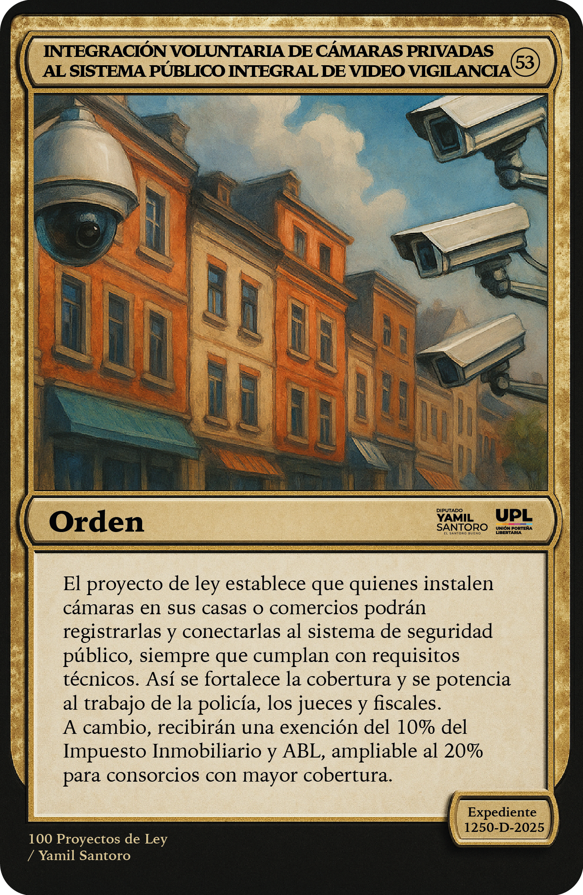
53. INTEGRACIÓN VOLUNTARIA DE CÁMARAS PRIVADAS AL SISTEMA PÚBLICO INTEGRAL DE VIDEO VIGILANCIA
54. ASIGNACIÓN PRIORITARIA DE VACANTES EN ESCUELAS PÚBLICAS A LOS PORTEÑOS
56. REGISTRO DE MANDATARIOS Y MANDANTES DE LA CIUDAD
57. SANCIONES POR PROMOCIÓN O DIFUSIÓN DE OFERTAS ENGAÑOSAS POR MEDIOS DIGITALES
58. PROHIBICIÓN DE ARENADO CON SÍLICE
59. MODIFICACIÓN DEL RÉGIMEN PROCESAL PENAL JUVENIL
61. HABILITAR LA VENTA Y CONSUMO DE BEBIDAS ALCOHÓLICAS DE FORMA RESPONSABLE EN ESTADIOS DEPORTIVOS
62. HABILITAR LA PRESENCIA DE PÚBLICO VISITANTE EN ESTADIOS DE FÚTBOL
63. ENTONACIÓN DEL HIMNO NACIONAL EN PARTIDOS DE FÚTBOL Y OTROS
64. LÍMITES A LAS DECLARACIONES LEGISLATIVAS A NÚMEROS REDONDOS
65. ESTABLECER AL PLÁTANO DE SOMBRA COMO ESPECIE NO APTA PARA LA CIUDAD
66. LIMITAR LOS HONORARIOS DE LOS MANDATARIOS DEL GOBIERNO
67. CREACIÓN DE LA IGJ LOCAL
68. ESPACIO PARA COMERCIOS ATENDIDOS POR PERSONAS CON DISCAPACIDAD O EMPRESAS QUE LAS EMPLEAN
69. ELIMINACIÓN DE LA VERIFICACIÓN TÉCNICA VEHICULAR (VTV) OBLIGATORIA
70. TERMINAR CON LA OBLIGACIÓN DEL GRABADO DE AUTOPARTES
71. INCORPORACIÓN DE LOS PLAZOS EN LOS ACUERDOS DE MEDIACIÓN PENAL
72. CALLE "DIEGO ARMANDO MARADONA"
73. MAYOR PLAZO PARA LA RECARGA O MANTENIMIENTO DE LOS EXTINTORES (MATAFUEGOS)
74. ELIMINACIÓN DEL SUBSIDIO CULTURAL VITALICIO
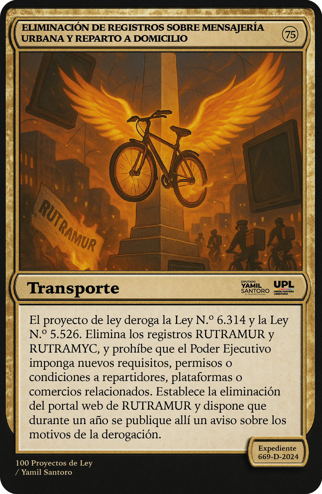
75. ELIMINACIÓN DE REGISTROS SOBRE MENSAJERÍA URBANA Y REPARTO A DOMICILIO
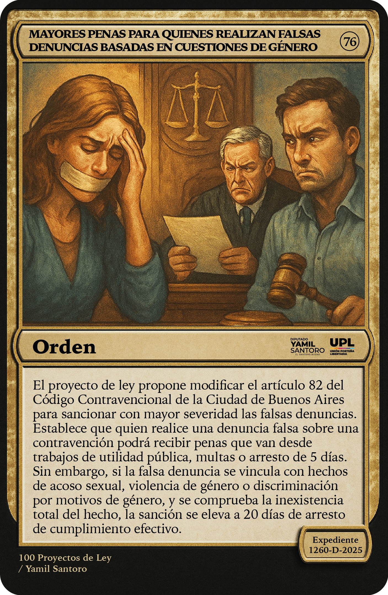
76. MAYORES PENAS PARA QUIENES REALIZAN FALSAS DENUNCIAS BASADAS EN CUESTIONES DE GÉNERO
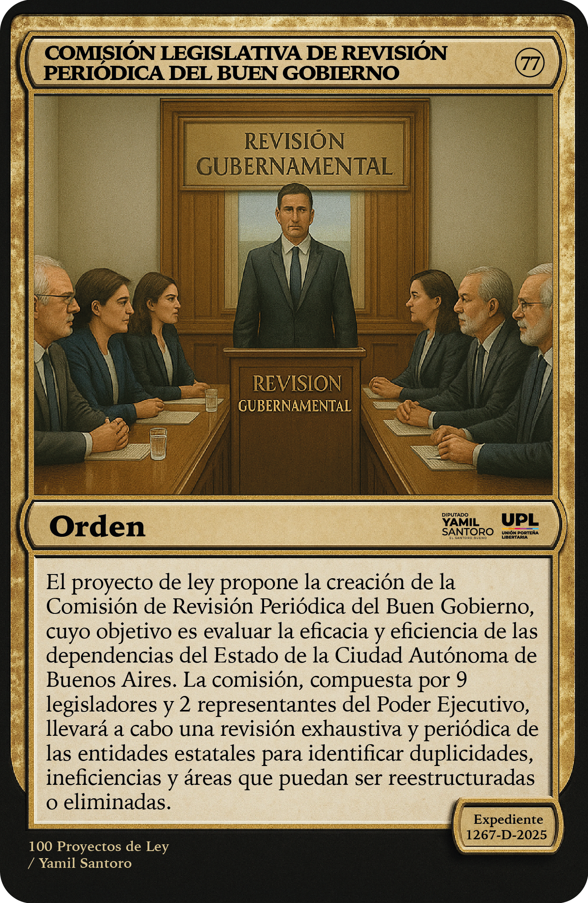
77.COMISIÓN LEGISLATIVA DE REVISIÓN PERIÓDICA DEL BUEN GOBIERNO
78. FORTALECIMIENTO DE LA AUTONOMÍA DEL TRIBUNAL SUPERIOR DE JUSTICIA DE LA CABA
79. TERMINAR CON LAS VILLAS EN LA CABA
80. PREAUTORIZAR DIVULGACIÓN DE INFORMACIÓN E IMÁGENES PERSONALES ANTE SECUESTROS/
81. BAJA DE LA EDAD DE IMPUTABILIDAD
82. LEY DE CÁRCELES PRIVADAS PARA LA CABA
83. AUMENTAR PENAS POR MALTRATO ANIMAL
84. MAYORES CONTROLES Y SANCIONES PARA ADMINISTRADORES DE CONSORCIOS
86. REFERÉNDUM Y CONSULTA POPULAR DIGITAL
87. PREVENCIÓN E INTERVENCIÓN EN SITUACIONES DE ACOSO ESCOLAR Y CIBERACOSO
88. REFORMA CONSTITUCIONAL
89. PROHIBIR QUE LAS PERSONAS DUERMAN EN LA CALLE
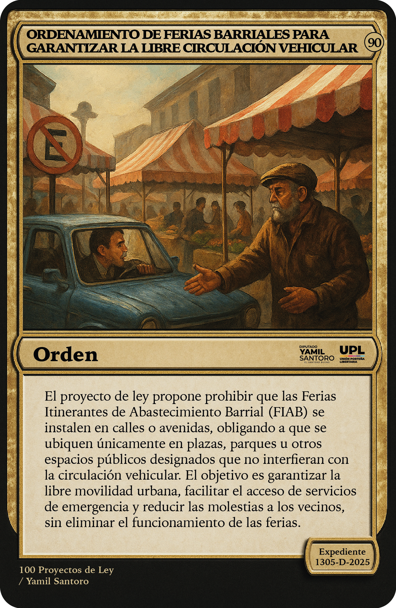
90. ORDENAMIENTO DE FERIAS BARRIALES PARA GARANTIZAR LA LIBRE CIRCULACIÓN VEHICULAR
91. SANCIONES POR CARTELES EN ESTADO DE DETERIORO
92. ADECUACIÓN DE CONSTRUCCIONES BAJO AUTOPISTA POR RAZONES DE HIGIENE Y SEGURIDAD
93. EDUCACIÓN FINANCIERA EN COLEGIOS
94. EXIMIR DEL SISTEMA DE AUTOPROTECCIÓN A ESTABLECIMIENTOS DE HASTA 500 M² DE SUPERFICIE CUBIERTA
95. SIMPLIFICACIÓN DEL REGISTRO DE PLANOS CONTRA INCENDIO
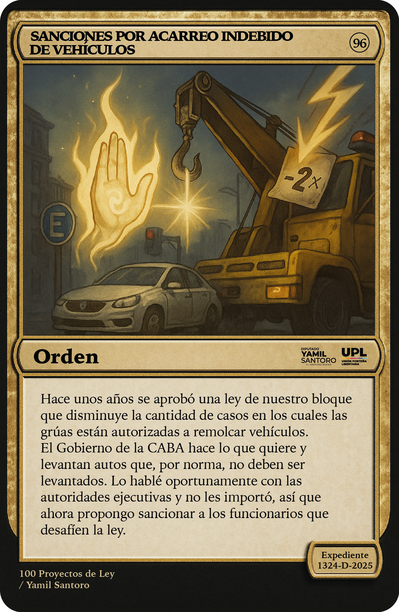
96. SANCIONES POR ACARREO INDEBIDO DE VEHÍCULOS
97. RESTRICCIÓN DE CARRILES PARA BICICLETAS FRENTE A ACCESOS DE CENTROS DE SALUD
98. SANCIÓN POR OMISIÓN DE COBROS EN SALUD PÚBLICA
99. MODERNIZACIÓN DEL SISTEMA DE TRANSPORTE PARTICULAR DE PASAJEROS
100. SISTEMA DE REGISTRACIÓN DE BOLETOS DE COMPRAVENTA DE INMUEBLES